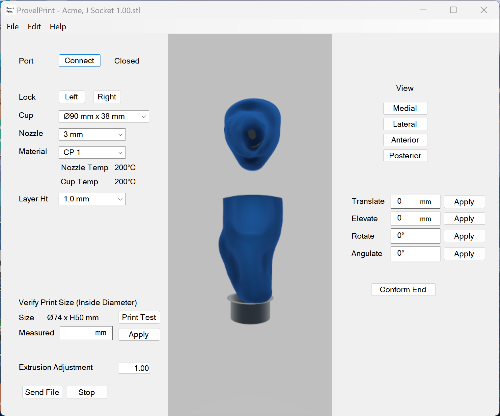

Anmol Singh Jammu |
University of Washington
Bachelor of Science in Computer Science
Software Engineer
(November 2022 to January 2023)
I worked as a software engineer at Provel, a 3D printer company. I was the sole software developer for ProvelPrint, 3D printer software that I wrote from scratch. I mainly used C++/CLI, C# and the .NET Framework. The job involved, among other things, 3D rendering and working with a device driver.
Full Stack Developer
(March 2022 to June 2022)
I was a full stack developer at the fintech start-up Forge. I had to use Ruby on Rails on the backend and JavaScript on the frontend. I was responsible for mission-critical software that shaped the world's first private markets platform.
UW Programming Languages and Software Engineering Group
Research Assistant
(July 2016 to October 2016)
I wrote parts of a Java program called Toradocu for a research project. Toradocu generates tests from Javadoc comments. I extended the features of the software, fixed bugs and refactored code. I also attended meetings with the research professor and another student on the team.
Unix-Like Kernel
I implemented major components of a Unix-like kernel based on the JOS kernel. I implemented the virtual memory, file system and threads components.
Pet Adoption App
I developed an Android app from scratch that allows a user to find pets available for adoption at local shelters.
504 E Denny Way
Apt 108
Seattle, WA 98122
Phone: 206 579 8217
Email: asjammu837@gmail.com